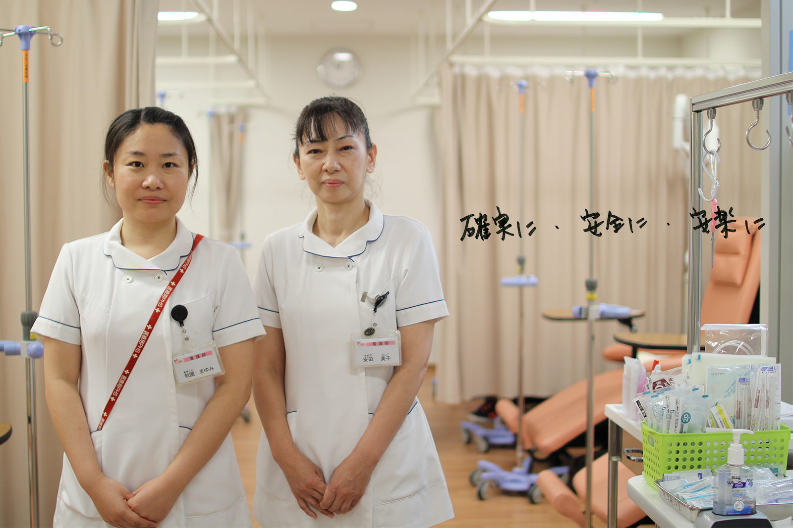

看護部
Nurse【がん化学療法看護認定看護師】
 もどる
もどる

■がん化学療法看護認定看護師とは
主な活動内容は
- ・患者さん、ご家族に対する直接的ケア
- ・がん化学療法看護に関するリソースとしての役割
専門的技術としては
- ・安全な抗がん剤の取り扱いと投与
- ・抗がん剤による有害反応と症状マネジメント
- ・抗がん剤治療を受ける患者さんの身体的、心理的、社会的アセスメント
- ・抗がん剤治療を受ける患者さん、ご家族への情報提供と教育指導
- ・看護スタッフへの教育および支援 などがあります。
がん化学療法が「確実に」「安全に」「安楽に」行われることを支えることができるように活動しています。
私は、外来化学療法室で専任看護師として勤務しています。看護師経験すべてにおいて、がんの患者さん、ご家族と共に過ごしてきました。特に血液内科の移植看護に携わってきました。その中で、抗がん剤の副作用や合併症と闘いながら治療を受けている患者さん、その苦痛を目の当たりにするご家族に対して、十分なケアができているのか、もっと何かできることがあるのではないだろうか、という思いから、がん化学療法看護認定看護師を目指しました。がん化学療法は、医療情勢や患者さんのQOLを重視した視点などから、通院で実施することも多くなってきています。その中で短時間に、タイミングを逃さず、ニーズに合わせて先取りしたケアができるようにつとめています。
外来化学療法室 秋國 まゆみ
現在、婦人科・泌尿器科病棟で勤務しています。がんと診断された患者さんは、説明の上抗がん剤治療を始めますが、治療の途中で揺れ動く患者さんは少なくありません。その様な患者さんに寄り添い、患者さんと共に考えたいと思っています。また、患者さんを支えているご家族とのコミュニケーションを大切にしています。患者・家族のつらい治療が少しでも和らげるように、少しでも幸せを感じられる看護ができるように努めています。
総合11階 安田 美子